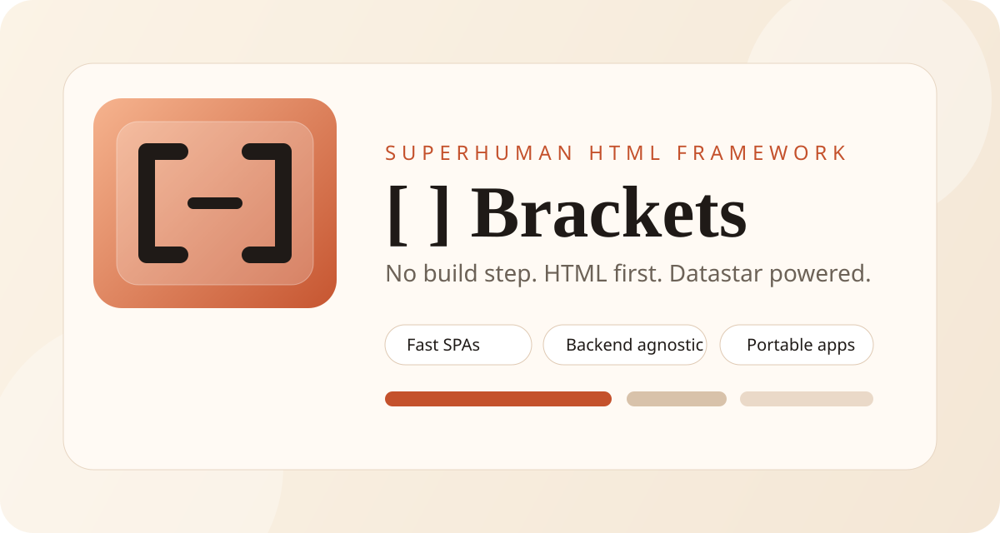

Superhuman speed
Less setup, less ceremony, fewer moving parts, and a faster path from idea to working page.

No build step. HTML first. Datastar powered. Backend agnostic. Portable from a desktop folder to production.
Less setup, less ceremony, fewer moving parts, and a faster path from idea to working page.
One frontend contract that works from local files to full remote backends without changing the framework identity.
HTML stays HTML, config stays YAML or JSON, and the app grows only when it actually needs more structure.